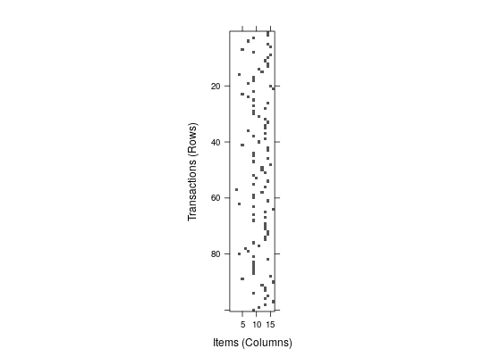
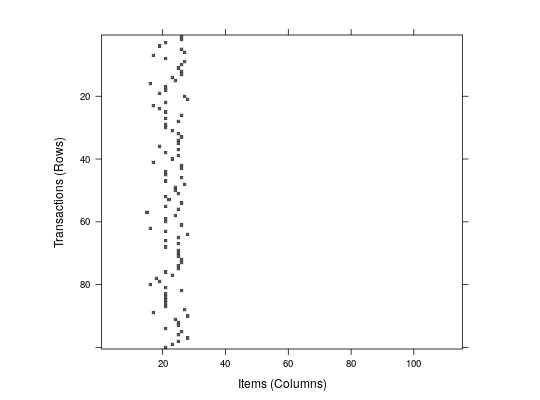

Provides the generic functions and the S4 methods for converting item labels into column IDs used in the binary matrix representation and vice versa.
decode converts from the numeric (column IDs) representation to
readable item labels. decode is used by LIST.
encode converts from readable item labels to an itemMatrix using a
given coding. With this method it is possible to create several compatible
itemMatrix objects (i.e., use the same binary representation for
items) from data.
recode recodes an itemMatrix object so its coding is compatible
with another object or the matrix follows a certain order of items.
decode(x, …) # S4 method for list decode(x, itemLabels) # S4 method for numeric decode(x, itemLabels) encode(x, …) # S4 method for list encode(x, itemLabels, itemMatrix = TRUE) # S4 method for character encode(x, itemLabels, itemMatrix = TRUE) # S4 method for numeric encode(x, itemLabels, itemMatrix = TRUE) recode(x, …) # S4 method for itemMatrix recode(x, itemLabels = NULL, match = NULL)
encode) or of numeric (for decode), or
an object of class itemMatrix (for recode).itemLabels vector can be obtained from itemMatrix,
transactions and associations by the
method itemLabels.itemMatrix otherwise
an object of the same class as x is returned.itemMatrix object whose item coding x
should match.recode always returns an object
of class itemMatrix.
For encode with itemMatrix = TRUE an object
of class itemMatrix is returned.
Otherwise the result is of the same type as x, e.g., a
list or a vector.
LIST,
associations-class,
itemMatrix-class
#> [1] "age=Young" "age=Middle-aged" "age=Senior" #> [4] "age=Old" "workclass=Federal-gov" "workclass=Local-gov"#> [[1]] #> [1] 2 11 26 33 36 51 60 62 64 66 70 111 114 #> #> [[2]] #> [1] 3 10 26 31 39 50 60 62 63 66 69 111 114 #> #> [[3]] #> [1] 2 8 21 29 41 51 60 62 63 66 70 111 114 #> #> [[4]] #> [1] 3 8 19 31 41 50 58 62 63 66 70 111 114 #> #> [[5]] #> [1] 2 8 26 31 45 55 58 61 63 66 70 77 114 #>decode(list, itemLabels = iLabels)#> [[1]] #> [1] "age=Middle-aged" "workclass=State-gov" #> [3] "education=Bachelors" "marital-status=Never-married" #> [5] "occupation=Adm-clerical" "relationship=Not-in-family" #> [7] "race=White" "sex=Male" #> [9] "capital-gain=Low" "capital-loss=None" #> [11] "hours-per-week=Full-time" "native-country=United-States" #> [13] "income=small" #> #> [[2]] #> [1] "age=Senior" "workclass=Self-emp-not-inc" #> [3] "education=Bachelors" "marital-status=Married-civ-spouse" #> [5] "occupation=Exec-managerial" "relationship=Husband" #> [7] "race=White" "sex=Male" #> [9] "capital-gain=None" "capital-loss=None" #> [11] "hours-per-week=Part-time" "native-country=United-States" #> [13] "income=small" #> #> [[3]] #> [1] "age=Middle-aged" "workclass=Private" #> [3] "education=HS-grad" "marital-status=Divorced" #> [5] "occupation=Handlers-cleaners" "relationship=Not-in-family" #> [7] "race=White" "sex=Male" #> [9] "capital-gain=None" "capital-loss=None" #> [11] "hours-per-week=Full-time" "native-country=United-States" #> [13] "income=small" #> #> [[4]] #> [1] "age=Senior" "workclass=Private" #> [3] "education=11th" "marital-status=Married-civ-spouse" #> [5] "occupation=Handlers-cleaners" "relationship=Husband" #> [7] "race=Black" "sex=Male" #> [9] "capital-gain=None" "capital-loss=None" #> [11] "hours-per-week=Full-time" "native-country=United-States" #> [13] "income=small" #> #> [[5]] #> [1] "age=Middle-aged" "workclass=Private" #> [3] "education=Bachelors" "marital-status=Married-civ-spouse" #> [5] "occupation=Prof-specialty" "relationship=Wife" #> [7] "race=Black" "sex=Female" #> [9] "capital-gain=None" "capital-loss=None" #> [11] "hours-per-week=Full-time" "native-country=Cuba" #> [13] "income=small" #>## Example 2: Manually create an itemMatrix data <- list( c("income=small", "age=Young"), c("income=large", "age=Middle-aged") ) iM <- encode(data, iLabels) iM#> itemMatrix in sparse format with #> 2 rows (elements/transactions) and #> 115 columns (items)inspect(iM)#> items #> [1] {age=Young,income=small} #> [2] {age=Middle-aged,income=large}## use the itemMatrix to create transactions as(iM, "transactions")#> transactions in sparse format with #> 2 transactions (rows) and #> 115 items (columns)## Example 3: use recode ## select first 100 transactions and all education-related items sub <- Adult[1:100, itemInfo(Adult)$variables == "education"] itemLabels(sub)#> [1] "education=Preschool" "education=1st-4th" "education=5th-6th" #> [4] "education=7th-8th" "education=9th" "education=10th" #> [7] "education=11th" "education=12th" "education=HS-grad" #> [10] "education=Prof-school" "education=Assoc-acdm" "education=Assoc-voc" #> [13] "education=Some-college" "education=Bachelors" "education=Masters" #> [16] "education=Doctorate"image(sub)